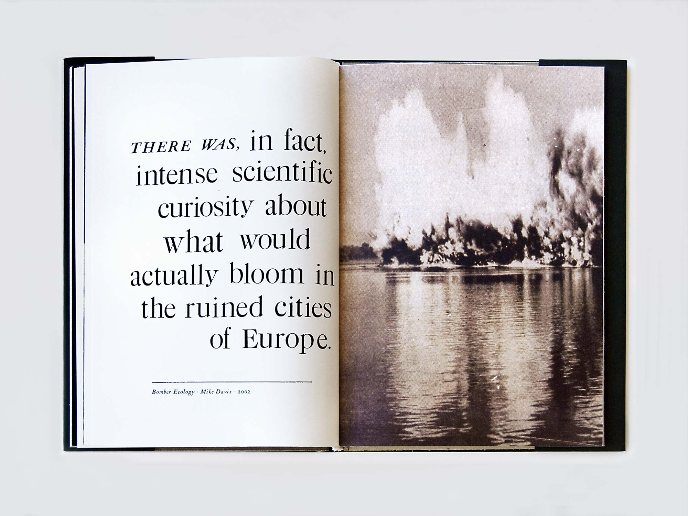

Nature 2
A publication examining the conflicted, constantly shifting relationship between nature and the built environment, as well as the creation of a new, hybrid landscape combining the two: Nature 2.
Historical and contemporary writings—anti-urban tracts, ecologies of bombed and abandoned metropolises, utopian city plans, essays on industrial landscapes—are juxtaposed with impressionistic imagery to investigate the fluid boundaries separating city and nature.
My role: Concept, research, editing, design